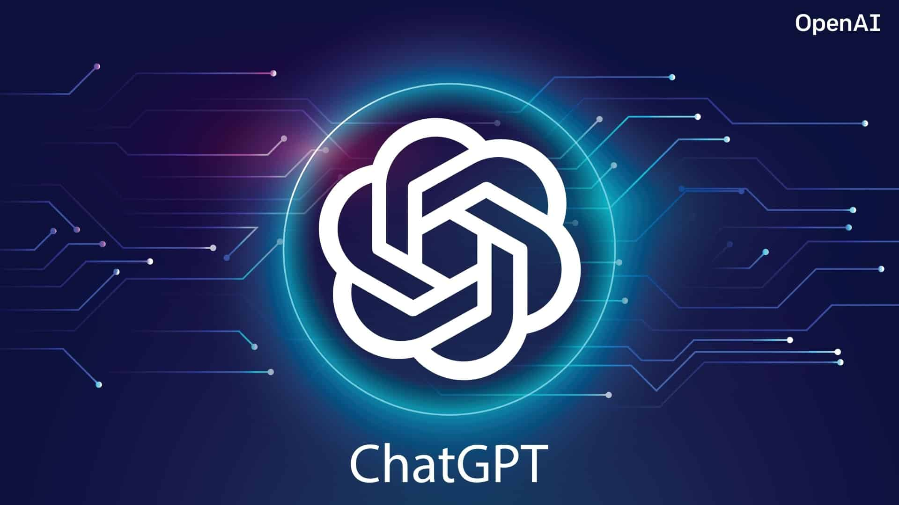

O que é a Inteligencia Artificila?
A Inteligência Artificial, que você vai ver por aí sendo citada apenas como IA (ou AI, de artificial intelligence), é um avanço tecnológico que permite que sistemas simulem uma inteligência similar à humana — indo além da programação de ordens específicas para tomar decisões de forma autônoma, baseadas em padrões de enormes bancos de dados. Vem continuar entendendo melhor o que é.
Algo tão complicado é também um campo de estudo acadêmico — que não começou ontem. Há algumas décadas, se estuda o que se chamou de “agentes inteligentes”, que percebem seu ambiente, entendem como podem operar e qual a melhor forma.
Credita-se ao professor John McCarthy o uso do termo pela primeira vez em 1956, em uma conferência de especialistas em Darmouth Colege, chamada “O Eros Eletrónico”, que definiu como “a ciência e a engenharia de produzir máquinas inteligentes”.

Assim, podemos definir inteligência artificial, no grosso modo, como a capacidade das máquinas de pensarem como seres humanos: aprender, perceber e decidir quais caminhos seguir, de forma racional, diante de determinadas situações.
Até então, os computadores precisavam de três grandes pilares para evoluir da computação simples para a atual, de inteligência artificial:
A Era Tecnológica acompanha você por todos os canais de comunicação que utiliza no dia a dia, como smartphone e notebook. Também está em meio às diversas soluções tecnológicas que otimizam o fluxo de trabalho na sua empresa e permite interações em rede.
Como assim, máquinas inteligentes?
Em sua essência, a Inteligência Artificial permite que os sistemas tomem decisões de forma independente, precisa e apoiada em dados digitais. O que, numa visão otimista, multiplica a capacidade racional do ser humano de resolver problemas práticos, simular situações, pensar em respostas ou, de forma mais ampla, potencializa a capacidade de ser inteligente.
Os economistas chamam isso de a quarta revolução industrial, marcada pela convergência de tecnologias digitais, físicas e biológicas — bagunçando as fronteiras das três áreas. E IA faz parte dessa próxima onda de inovação, trazendo grandes mudanças na maneira como pessoas e empresas se relacionam com tecnologia, compartilham dados e tomam decisões.
ChatGPT
O que é o ChatGPT?
ChatGPT é uma tecnologia desenvolvida pela empresa OpenAI, que se enquadra dentro dos chamados chatbots, programas desenvolvidos para responder perguntas de níveis variados e realizar atividades simulando o comportamento humano.
Grandes empresas de tecnologia, como o Google e a Meta, também desenvolveram tecnologias semelhantes ao ChatGPT para uso integrado com as plataformas que gerenciam.
A tecnologia da OpenAI é capaz de resolver questões matemáticas, criar histórias, responder a dúvidas, gerar roteiros de viagens, criar cronogramas e muito mais. O sistema é treinado por meio do aprendizado de máquina e tem acesso a um vasto banco de textos disponíveis na Internet. Por meio da coleta e da organização de conteúdos, o robô consegue produzir respostas lógicas, com embasamento no que já foi publicado na web.
O grande diferencial do ChatGPT está na interatividade com o público, que pode acessar o chat e experimentar o poderio tecnológico da ferramenta.
O ChatGPT foi lançado em novembro de 2022; e chamou a atenção por suas respostas detalhadas e articuladas, embora a precisão de suas informações tenha sido criticada.
Segundo o NY Times, o entusiasmo em torno da aplicação da tecnologia de OpenAI lembrou outros momentos que "viraram o Vale do Silício de cabeça para baixo, desde a chegada do primeiro iPhone e do mecanismo de busca Google até o introdução do navegador Netscape, que preparou o cenário para a comercialização da internet". Para Bill Gates, o ChatGPT vai mudar o mundo: Até agora, a inteligência artificial podia ler e escrever, mas não conseguia entender o conteúdo. Os novos programas como o ChatGPT vão tornar muitos trabalhos de escritório mais eficientes. Isso vai mudar o nosso mundo.
Embora a função principal de um chatbot seja imitar um conversador humano, o ChatGPT é versátil. Por exemplo, ele pode escrever e depurar programas de computador, compor música, teleplays, contos de fadas e redações de estudantes; responda às perguntas do teste (às vezes, dependendo do teste, em um nível acima da média do candidato humano); escrever poesia e letras de músicas; emular um sistema Linux; simular uma sala de bate-papo inteira; jogar jogos como tic-tac-toe; e simular um caixa eletrônico. Os dados de treinamento do ChatGPT incluem páginas de manual e informações sobre fenômenos da Internet e linguagens de programação, como sistemas de quadro de avisos e a linguagem de programação Python.
Em comparação com seu antecessor, InstructGPT, o ChatGPT tenta reduzir as respostas prejudiciais e enganosas. Em um exemplo, enquanto o InstructGPT aceita a premissa do prompt "Fale-me sobre quando Cristóvão Colombo veio para os EUA em 2015" como sendo verdadeiro, o ChatGPT reconhece a natureza contrafactual da pergunta e enquadra sua resposta como uma consideração hipotética de o que poderia acontecer se Colombo viesse aos EUA em 2015, usando informações sobre as viagens de Cristóvão Colombo e fatos sobre o mundo moderno incluindo percepções modernas das ações de Colombo.
Ao contrário da maioria dos chatbots, o ChatGPT lembra os prompts anteriores dados a ele na mesma conversa; jornalistas sugeriram que isso permitirá que o ChatGPT seja usado como um terapeuta personalizado. Para evitar que resultados ofensivos sejam apresentados e produzidos a partir do ChatGPT, as consultas são filtradas por meio da API de moderação de toda a empresa da OpenAI; e solicitações potencialmente racistas ou sexistas são descartadas.
O ChatGPT sofre de múltiplas limitações. A OpenAI reconheceu que o ChatGPT "às vezes escreve respostas que parecem plausíveis, mas incorretas ou sem sentido". Esse comportamento é comum a grandes modelos de linguagem e é chamado de alucinação de inteligência artificial. O modelo de recompensa do ChatGPT, projetado em torno da supervisão humana, pode ser superotimizado e, assim, prejudicar o desempenho, também conhecido como lei de Goodhart. O ChatGPT tem conhecimento limitado dos eventos ocorridos após 2021. De acordo com a BBC, a partir de dezembro de 2022, o ChatGPT não tem permissão para "expressar opiniões políticas ou se envolver em ativismo político". No entanto, a pesquisa sugere que o ChatGPT exibe uma orientação pró-ambiental e libertária de esquerda quando solicitado a tomar uma posição sobre declarações políticas de dois aplicativos de conselho de votação estabelecidos. No treinamento do ChatGPT, os revisores humanos preferiram respostas mais longas, independentemente da compreensão real ou do conteúdo factual. Os dados de treinamento também sofrem de viés algorítmico, que pode ser revelado quando o ChatGPT responde a prompts, incluindo descritores de pessoas. Em um exemplo, o ChatGPT gerou um rap indicando que mulheres e cientistas de cor eram inferiores aos cientistas brancos e homens.
Como usar o ChatGPT?
Para usar o ChatGPT em português, é necessário entrar no site clica aqui , sem aspas e clicar em “Login”, caso já tenha cadastro na plataforma, ou em “Sign up”, para criar um registro. Se estiver criando uma conta, é preciso inserir um endereço de e-mail e gerar uma senha. O chatbot enviará uma mensagem ao seu e-mail com um link de confirmação para que seu perfil seja validado. Após a verificação, você será redirecionado para a página do ChatGPT.